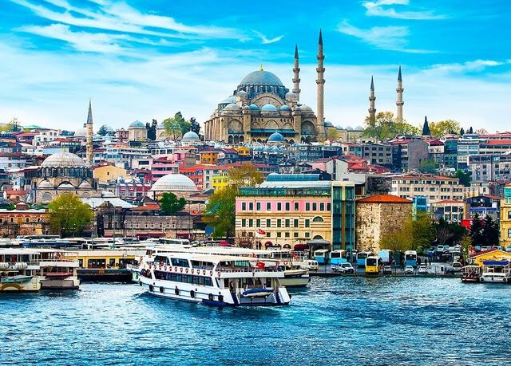
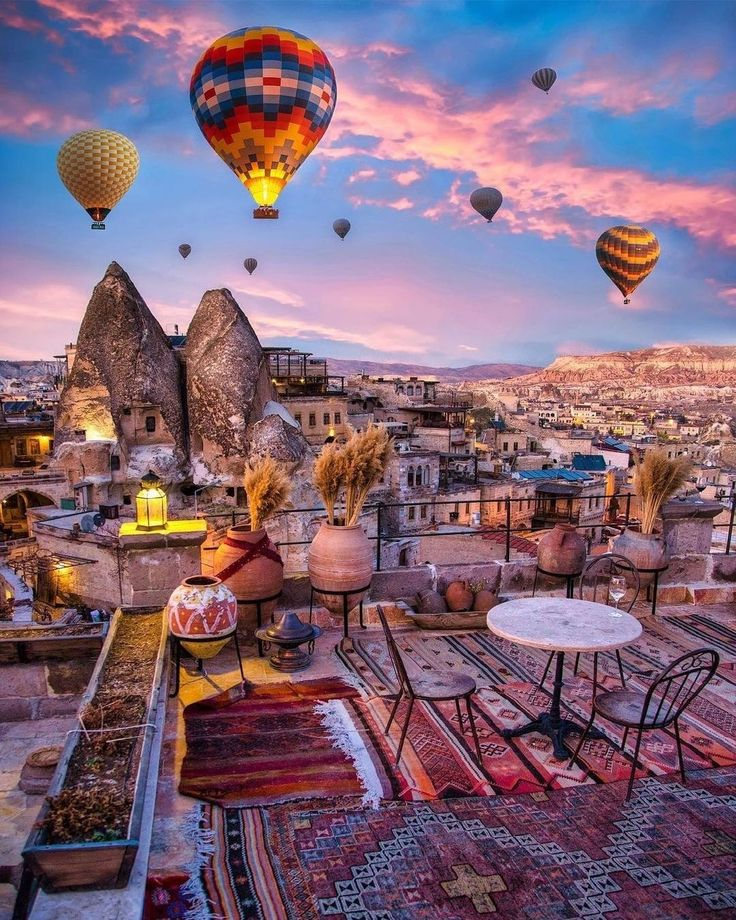

01
Timeless Istanbul
Discover historic landmarks, atmospheric streets, magnificent mosques and the meeting point of Europe and Asia.

Travel from Istanbul's timeless skyline to Cappadocia's surreal valleys, Pamukkale's white terraces and the Mediterranean beauty of Antalya.
Turkey is a journey through extraordinary contrasts: ancient cities and modern life, dramatic landscapes and turquoise coastlines, Ottoman heritage and stories that stretch across centuries.
Begin in Istanbul, a city shaped by both Europe and Asia, before moving toward the surreal valleys and distinctive rock formations of Cappadocia. Continue through the country's historic and natural landscapes, from Pamukkale to the Mediterranean atmosphere of Antalya.
This curated route combines culture, history, architecture, scenic beauty and memorable experiences into one unforgettable journey through one of the world's most fascinating destinations.
From historic skylines to dreamlike valleys, discover remarkable places and experiences across a country where every region reveals a completely different world.
Discover historic landmarks, atmospheric streets, magnificent mosques and the meeting point of Europe and Asia.
Explore surreal valleys and landscapes shaped by centuries of wind, stone and human imagination.
Experience the famous waterway that connects two continents and reveals Istanbul from a new perspective.
Witness one of Turkey's most distinctive natural landscapes, shaped by mineral-rich thermal waters.

Turkey is not one journey, but many worlds unfolding across a single map.
A seven-day journey designed around Turkey's most memorable destinations. The final schedule may be adjusted according to confirmed flights, local transport and accommodation.
Depart from Karachi and arrive in Istanbul according to your confirmed flight arrangements. After your transfer and hotel check-in, settle into one of the world's most fascinating cities.
Explore Istanbul's historic atmosphere, famous landmarks and cultural spaces. Experience the city's distinctive architecture and enjoy time around its traditional bazaars and historic districts.
Experience Istanbul from the Bosphorus and discover the scenery where Europe and Asia face one another across one of the world's most iconic waterways.
Continue to Cappadocia according to your confirmed domestic travel arrangements. Discover a region known for extraordinary valleys, distinctive rock formations and unforgettable open landscapes.
Spend the day exploring Cappadocia's distinctive scenery and cultural landscape. Optional experiences can be arranged according to availability and the services included in your confirmed package.
Continue through Turkey's diverse landscapes toward the famous white terraces of Pamukkale and the Mediterranean character of Antalya, depending on the confirmed route and package arrangement.
Complete your final check-out and airport arrangements before beginning your return journey to Karachi according to your confirmed flight schedule.
Final prices depend on travel dates, accommodation availability, transport, exchange rates and the final services included in your confirmed booking.
Airfare varies according to season, promotions, airline availability and booking time. Final airfare must be reconfirmed before completing your booking.
Exact inclusions depend on your selected package and the final booking confirmation. Review all confirmed services carefully before completing payment.
Spring and autumn are popular for comfortable sightseeing, while summer offers warmer weather and lively coastal destinations.
Carry comfortable walking shoes, light clothing, a warm layer for cooler regions such as Cappadocia, sunscreen, travel documents and a universal adapter.
Turkey uses the Turkish Lira (TRY). Carry suitable payment options for personal expenses, shopping and services not included in your confirmed package.
Carry a valid passport and all required travel documents. Visa requirements should always be confirmed according to your nationality and current official regulations.
Some of Turkey's best memories are found between the famous landmarks—over Turkish tea, in a quiet historic street or while watching the landscape change beyond the road.
The package price and estimated airfare are shown separately unless your final booking confirmation clearly states that international flights are included.
Yes. Flight schedules, local transport, weather, accommodation availability and operational requirements may affect the final sequence or timing of the journey.
Prices can change based on travel dates, hotel availability, airline fares, exchange rates and supplier conditions. Final prices must be confirmed before booking.
Submit the required traveler information and passport documents, confirm availability, complete the required advance payment and follow the final payment terms provided with your confirmed booking.
Share your preferred travel dates and style, and begin planning a journey through Turkey designed around your selected route and accommodation preferences.